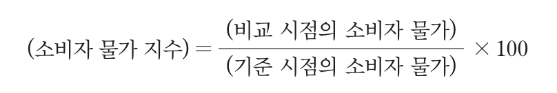
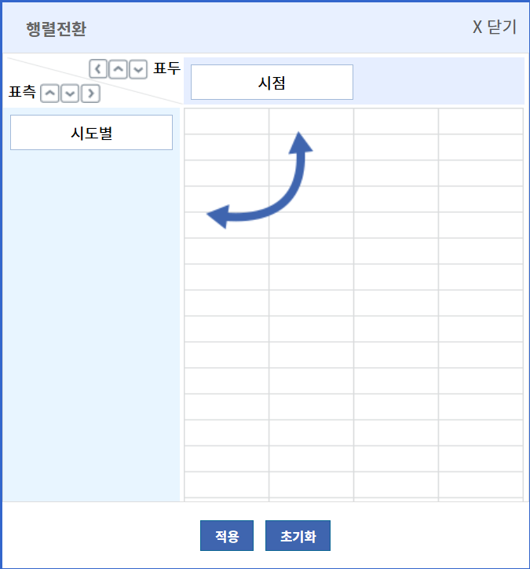
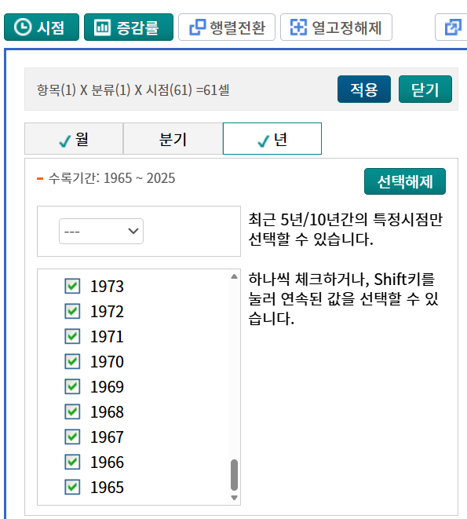
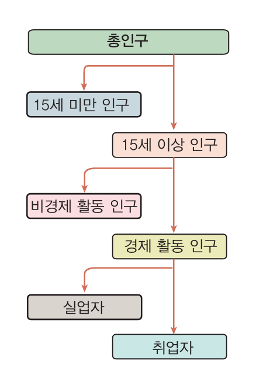
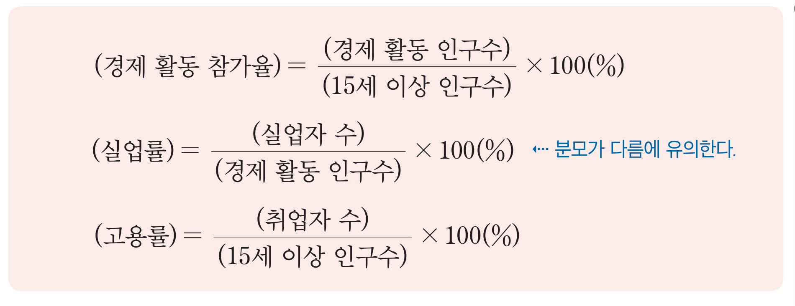
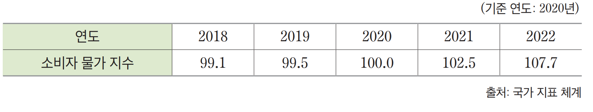
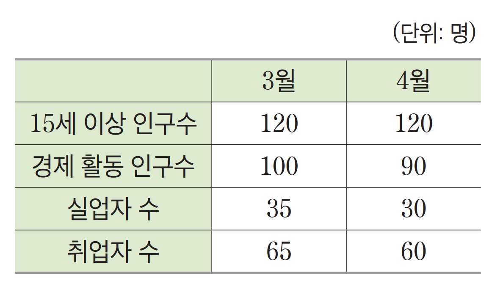

경제 지표, 직접 찾아보고 분석해보자!
안녕하세요! 이 웹페이지는 고등학교 2학년 경제수학을 수강하는 여러분을 위해 만들어졌습니다. 뉴스와 교과서에서만 보던 소비자물가지수(CPI)와 고용 관련 지표(실업률, 고용률 등)를 통계청 KOSIS에서 직접 찾아보고, 데이터를 시각화하여 경제 흐름을 분석해 볼 수 있습니다.
KOSIS 데이터 다운로드 방법
- KOSIS 국가통계포털(kosis.kr)에 접속합니다.
- 주제별 통계에서 '물가' 또는 '고용' 카테고리를 찾습니다.
- 원하는 통계표(예: 품목성질별 소비자물가지수, 경제활동인구총괄)를 선택합니다.
- 조회 기간을 설정하고 데이터가 행(시간), 열(지표값) 형태가 되도록 조정합니다.
- 다운로드 버튼을 눌러 CSV 파일 형식으로 저장합니다.
1. 소비자물가지수 (CPI) 분석
소비자물가지수는 우리 생활에 필요한 상품과 서비스의 가격 변동을 측정하는 중요한 지표입니다.
교과서 개념 다지기
경제 활동의 분야별 상태 또는 성과를 수나 비율로 나타낸 것을 경제지표라고 한다. 경제지표에는 국내 총생산, 소비자 물가 지수, 경제 성장률, 고용률, 실업률 등이 있다.
소비자 물가 지수(CPI)는 소비자가 생활하기 위해 구매하는 상품과 서비스의 가격 변동을 종합적으로 측정하는 지표로, 기준 시점의 물가를 100으로 여길 때 비교 시점의 물가에 대한 백분율을 의미한다. 즉

이다. 위 계산식에 따라 소비자 물가를 계산하기 위해서는 먼저 쌀, 닭고기, 감기약 등의 대표 품목을 정하고, 각 품목이 전체 가구의 소비 지출에서 차지하는 비중에 따라 가중치를 정한다. 그런 다음 특정 시점의 각 물품 가격에 가중치를 적용한 평균값을 계산하면 그 값이 특정 시점의 소비자 물가가 된다. 소비자 물가 지수는 경제 현상을 분석하고 통화 정책을 수립하는 데 활용되며 일반 소비자들이 경제 상황을 이해하는 데 도움을 줄 뿐만 아니라 정부, 기업, 투자자, 경제 전문가 등이 경제 상황을 평가하고 예측하는 데에 중요한 지표로 활용된다.
KOSIS 데이터 직접 다운로드하기
아래의 KOSIS 사이트 화면에서 안내에 따라 설정을 변경한 후 CSV 파일로 다운로드해 보세요.
1. 행렬 전환
상단의 '행렬전환' 버튼을 누른 후, '시점'과 '시도별'을 모두 표측(세로)으로 드래그하여 옮기고 [적용]을 누릅니다.

2. 모든 연도 선택
상단의 '시점' 버튼 클릭 → '년' 탭 선택 → Shift 키를 누른 채로 클릭하여 모든 연도를 선택합니다.

3. CSV 다운로드
설정이 완료되면 표 우측 상단의 다운로드 아이콘()을 눌러 CSV 파일 형식으로 내 컴퓨터에 저장합니다.
KOSIS 실습 페이지로 이동
통계청 KOSIS 사이트는 안정적인 데이터 제공을 위해 웹페이지 내 직접 삽입(임베딩)을 제한하고 있습니다.
아래 버튼을 눌러 새 창에서 소비자물가지수 데이터를 직접 다운로드해 보세요!
데이터 업로드
다운로드를 못했다면 이곳의 데이터를 활용하세요!데이터 분석 포인트
- 물가가 전반적으로 오르고 있나요, 내리고 있나요?
- 가장 물가 상승폭이 컸던 시기는 언제이며, 그 원인은 무엇일까요?
- 인플레이션이 나의 실생활에 미치는 영향은 무엇일까요?
팁: 차트 위의 이름표(범례)를 클릭하면 해당 그래프를 켜고 끌 수 있습니다.
CSV 파일을 업로드하면 이곳에 그래프가 나타납니다.
양쪽 슬라이더를 움직여 원하는 기간만 확대해서 보세요.
2. 고용 지표 (고용률, 실업률) 분석
고용률과 실업률은 국가 경제의 건강 상태를 보여주는 핵심적인 일자리 지표입니다.
고용 지표의 이해

고용과 관련된 지표로는 경제 활동 참가율, 실업률, 고용률 등이 있다. 우리나라에서는 이 지표들의 계산을 위해 총인구를 왼쪽 수형도처럼 분류한다. 15세 이상 인구를 노동 가능 인구로 보고, 그중 공부, 가사, 연로, 구직 단념 등으로 일할 능력이나 의사가 없는 사람을 비경제 활동 인구, 일할 능력과 의사가 있는 사람을 경제 활동 인구로 분류한다. 경제 활동 인구는 다시 취업자와 실업자로 분류한다.
지표별 계산 공식

경제 활동 참가율은 15세 이상 인구 중 경제 활동 인구의 비율로 경제 주체들의 경제 활동 현황을 파악할 수 있는 지표이다.
실업률은 경제 활동 인구 중 실업자의 비율로, 경제의 안정 상태를 판단할 수 있는 중요한 지표이다.
고용률은 15세 이상 인구 중 취업자의 비율로, 경제의 생산성과 일자리 창출 능력, 일자리 수요와 노동 시장의 안정성을 나타낸다.
중요: 실업률과 고용률의 관계
실업률과 고용률은 함께 살펴볼 필요가 있다. 실업률이 떨어진다고 해서 고용 상황이 안정되는 것이 아닐 수 있기 때문이다. 예를 들어 취업난이 장기간 지속되어 실업자 중 상당수가 일자리 찾기를 포기하면 이들은 실업자가 아니라 비경제 활동 인구로 분류하고, 이때 실업률은 낮아지지만 고용률은 높아지지 않는다.
고용 관련 지표 KOSIS 실습 페이지로 이동
아래 버튼을 눌러 통계청 KOSIS 새 창을 열고, 앞서 배운 방식(행렬 전환, 모든 연도 선택)을 활용해
고용 지표 데이터(경제활동인구총괄)를 CSV로 다운로드해 보세요!
데이터 업로드
다운로드를 못했다면 이곳의 데이터를 활용하세요!데이터 분석 포인트
- 시계열 분석: 시점에 따라 경제활동 참가율, 실업률, 고용률이 어떻게 변하고 있나요?
- 지표 간 비교: 실업률과 고용률은 항상 반대로 움직일까요? (실망실업자 개념과 연결해 보세요)
- 성별 분석: 남성과 여성의 성별 고용률 차이는 어떠하며, 여성의 경제활동 참가율은 과거에 비해 어떻게 변화해 왔나요?
- 계절성 분석 (심화): 농가/비농가 고용 지표는 계절의 영향을 크게 받습니다. KOSIS에서 데이터를 연 단위가 아닌 '월별' 또는 '분기별'로 설정하여 다운로드해 보세요. 매년 농번기(봄/가을)와 농한기(겨울)마다 그래프가 어떻게 일정한 패턴으로 오르내리는지 관찰할 수 있습니다.
팁: 차트 위의 이름표(범례)를 클릭하면 해당 그래프를 켜고 끌 수 있습니다.
CSV 파일을 업로드하면 이곳에 그래프가 나타납니다.
분석 조건 선택
양쪽 슬라이더를 움직여 원하는 기간만 확대해서 보세요.
배운 내용 확인 퀴즈
1. 다음 중 소비자물가지수(CPI)에 대한 설명으로 올바른 것은?
2. 실업률을 구하는 공식으로 알맞은 것은?
3. 인플레이션이 발생했을 때 일반적으로 유리해지는 사람은 누구일까요?
4-1. 다음 표를 보고, 2018년의 소비자 물가 지수는 기준 연도인 2020년의 몇 배인지 구하는 식과 그 값으로 알맞은 것을 고르시오.

4-2. 위 표를 보고, 2022년의 소비자 물가 지수는 기준 연도인 2020년의 몇 배인지 구하는 식과 그 값으로 알맞은 것을 고르시오.
5-1. 다음은 A 국가의 고용 지표를 나타낸 표이다. 3월의 '경제 활동 참가율'을 구하는 식과 값을 바르게 연결한 것을 고르시오.

5-2. 위 표를 보고, 4월의 '실업률'을 구하는 식과 값을 바르게 연결한 것을 고르시오.
5-3. 위 표를 보고, 4월의 '고용률'을 구하는 식과 값을 바르게 연결한 것을 고르시오.
6. 다음 중 '비경제활동인구'에 속하는 사람으로 가장 적절한 것은?
7. 고용 지표를 계산할 때 '노동 가능 인구'의 기준으로 삼는 연령은?
8. 경제 활동 참가율, 실업률, 고용률의 분모로 쓰이는 인구 집단을 바르게 짝지은 것은?
9. 구직 단념자가 늘어나 실업자에서 비경제활동인구로 이동했을 때, 실업률과 고용률의 변화로 옳은 것은?
10. 경제활동인구에 대한 설명으로 옳은 것은?